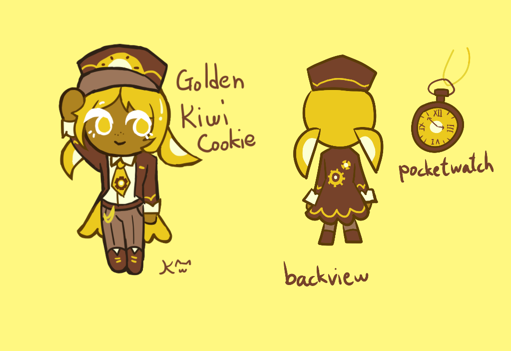

"Oh no, did I do something wrong?"

" An TBD employee working in the Transportation Division. Work may be tiring, but no matter what, a tasty meal always cheers her up! "
Facts about her:
- She has a fascination in trains and engineering since she was young
- She suffers from imposter syndrome, she never feels like she's good enough
- She likes trying out new food, she sometimes orders unusual sandwich combinations during lunch
- She often worry if she's doing badly at her job, but she's actually doing perfectly fine
- She is a relative to Kiwi Cookie